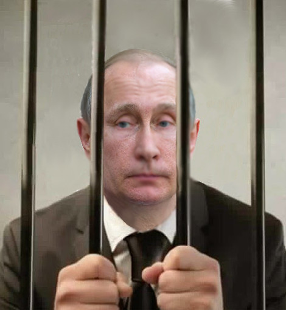
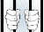

Господи, прими его с той же радостью, с какой мы его к тебе отправляем!
Всю жизнь он лез на высшие места.
Где с примененьем подлости, где — силы.
И, хоть судьбой подведена черта,
Спасибо, есть надгробная плита,
А то б он вылез даже из могилы.
Ты плыл по жизни размашисто и ароматно, как говно по трубопроводу. Найди же наконец успокоение.
Покойся с миром. Теперь ты в руках бога. Господи, следи за своим кошельком.


Приходит Медведев к Путину:
- Владимир Владимирыч, мы тут столько денег потратили... Купили в Лефортовскую тюрьму плазменные панели, тренажёры, матрацы ортопедические.
Значит есть деньги-то? Почему же детским садам отказываем? Ведь нужно позаботиться о нашем будущем!
- Нужно позаботиться о нашем будущем - это ты правильно понял. Осталось понять, что в детский сад мы с тобой уже точно не попадём.
В Гааге Путина осудили на двести лет тюрьмы.
— Вы что?! Я же столько не отсижу!
— Наша страна гуманная, отсидите, сколько сможете.
Президент спрашивает помощника:
- Откуда граждане знают, что у нас власти воруют?
- Из интернета, господин Президент. Прикажете усилить борьбу с воровством?
- Нет, лучше с интернетом.
- Почему питерские проститутки не обижаются, когда слышат выражение:"питерские бляди"?
- Потому, что знают - это не про них.
Поговаривают, что если открыть пустой кошелёк и прислушаться, то можно услышать, как далеко в Панаме играет виолончель...
Друзья – олигархи, дочери замужем за олигархами, личный виолончелист – миллиардер.
И как этот честный и скромный человек не чувствует себя изгоем в их компании?
Не стоило разводится с женой в 2013-м. Сразу началось - Украина, санкции, падение цен на нефть... Женщины - ох какие мстительные!
Судя по делам, наш Президент присягал на каком-то специальном экземпляре Конституции... Вот бы почитать!
Президент заявил, что оснований для повышения цен нет, поэтому цены будут повышать без основания.